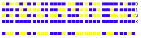

Nous avons vu que le nombre des dispositions du jeu de parquet, pour un carré formé de 64 carreaux, est égal à la soixante-quatrième puissance de 2. En diminuant ce nombre 264 de l'unité, on obtient le nombre de grains de blé qui recouvriraient l'échiquier, en supposant un grain de blé sur la première case, deux sur la seconde, quatre sur la troisième, et ainsi en doublant jusqu'à la soixante-quatrième case. Le nombre 264-1 rentre dans les nombres de Mersenne que nous avons considérés dans la note VI du Tome I. Nous dirons, à ce propos, que M. Le Lasseur vient encore de trouver que les nombres sont respectivement divisibles par et de vérifier que les autres nombres 2n-1 pour vingt-quatre valeurs de n premier jusqu'à 257, n'ont pas de diviseurs plus petits que 30 000. Ces nouveaux calculs nous confirment dans cette opinion que Fermat et Mersenne possédaient une puissante méthode de décomposition ignoré e aujourd'hui, mais que nous pensons avoir reconstituée en grande partie. Dans notre voyage à Rome, nous avons pu obtenir de la bienveillance et de la générosité de son Excellence le prince B. Boncompagni, la communication de deux précieux volumes de manuscrits contenant plus de quarante lettres inédites de Fermat à Mersenne. Dans une lettre datée de Toulouse, le 7 avril 1643, on trouve le passage suivant: « Vous me demandez si le nombre est premier ou non, et une méthode pour découvrir, dans l'espace d'un jour, s'il est premier ou composé. A cette question, je réponds que ce nombre est composé et se fait du produit de ces deux: qui sont premiers. Je suis toujours, mon révérend Père, votre très humble et très affectionné serviteur, FERMAT ». Pour se rendre compte de l'efficacité de cette méthode, on observera d'abord qu'il n'existait pas alors de tables très étendues de nombres premiers, et que ces deux facteurs de six chiffres étaient en dehors des tables; mais on observera encore qu'il n'existe pas de
méthode connue pour décomposer rapidement en facteurs premiers des nombres de douze chiffres. Si nous comparons avec les méthodes plus modernes, nous voyons Gauss, dans la sixième section des Disquitiones arithmeticae, proposant plusieurs méthodes pour distinguer les nombres premiers des nombres composés, et pour décomposer ceux-ci en leurs facteurs premiers; c'est, ajoute Gauss, l'un des problèmes les plus importants et les plus utiles de l'Arithmétique(nº 329). Il prend pour exemple le nombre qui se ramène immédiatement, par la suppression des facteurs 32, 5, 7 à un nombre de six chiffres que l'on trouve dans les tables de Burckhardt: Les méthodes de Gauss seraient impuissantes à résoudre le problème proposé par Mersenne à Fermat. Si l'on ne parvient pas à la décomposition des nombres de Mersenne par l'emploi des diverses méthodes connues actuellement, on vérifie que ces nombres sont premiers par l'application du théorème suivant analogue au théorème de Wilson. Pour que le nombre p=24q+3-1 soit premier, il faut et il suffit que la congruence En d'autres termes, on forme la suite des nombres Vn tels que chacun d'eux, à partir du troisième, soit égal au carré du précédent diminué de 2 unités; on supprime les multiples de p, et si le nombre de rang 4q+2 est nul, le nombre p est premier. Nous avons indiqué un procédé de calcul qui repose sur l'emploi du système de numération binaire et qui conduit à la construction d'un mécanisme propre à la vérification des grands nombres premiers. Dans ce système, la multiplication consiste simplement dans le déplacement longitudinal du multiplicande; d'autre part, il est clair que le reste de la division de 2m par 2n-1 est égal à 2r, r désignant le reste de la
division de m par n; par conséquent, dans l'essai de 231-1, par exemple, il suffira d'opérer sur des nombres ayant au plus 31 des chiffres 0 ou 1. La fig. 104 donne le calcul de V26 déduit du calcul de V25 par la formule les carrés ombrés représentent les unités des différents ordres du système  binaire, et les carrés blancs représentent des zéros. La première ligne est le résidu V25; les 31 premières lignes numérotées de 0 à 30 figurent le carré de V25; les quatre lignes numérotées 0, 1, 2, 3 au bas de la figure donnent l'addition des unités de chaque colonne, avec les reports; on a retranché 2, ou l'unité de la deuxième colonne à droite; enfin la dernière ligne est le résidu de V26.
La fig. 105 contient l'ensemble de tous les résidus de V1 à V30; la dernière ligne composée entièrement de zéros nous montre que 231-1 est premier. Pour la vérification des nombres de Mersenne de la forme 24q+1-1, on calcule de la même manière la série  On a encore le théorème wilsonien: Pour que p = 24nq+2n+1-1 soit premier, il faut et il suffit que l'on ait Fermat avait cru rencontrer dans l'expression une formule ne donnant que des nombres premiers. Il écrivait à Mersenne,
le 25 décembre 1640: « Si je puis une fois tenir la raison fondamentale que sont nombres premiers, il me semble que je trouverai de très belles choses en cette matière, car j'ai déjà trouvé des choses merveilleuses dont je vous ferai part ». Euler a signalé le premier l'inexactitude de sa conjecture de Fermat, en faisant voir que F5 est divisible par 641. Par l'emploi d'une théorie indiquée par Fermat lui-même, Euler avait démontré ce thérème: Les diviseurs premiers de 24q+1 sont de la forme linéaire 8hq+1. Dans l'exemple, il suffit d'essayer la division de F5 par les nombres et l'on trouve avec Euler Nous avons démontré (Académie de Turin, 27 janvier 1878), que les diviseurs premiers de 24q+1 sont de la forme 16hq+1. L'emploi de ce théorème simplifie, de plus de moitié, la recherche des diviseurs, et ainsi dans l'exemple, il est inutile d'essayer la division avec Euler et avec M. Tchebychef (1), par les quatre premiers nombres 193, 257, 449 et 577. De même, le premier diviseur qui se présente pour F12 est 7·214+1 ou 114 689; l'essai réussit et l'on en conclut que F12 n'est pas premier. De même encore, le premier diviseur à essayer pour F23 est 5·225+1 ou 167 772 161, et M. Pervouchine, pope du gouvernement de Perm, a vérifié que le nombre F23, qui est formé de 2 525 223 chiffres est encore un nombre composé. Tous ces résultats se vérifient en peu de temps, en calculant par congruences. Pour reconnaître si un nombre Fn est premier, on forme la série tels que chacun d'eux est égal au carré du précédent moins deux, en supprimant les multiples de Fn; pour que Fn soit premier, il faut que le résidu de rang 2n-1 soit nul. Nous avons fait le calcul pour n=6, et reconnu par ce moyen que le nombre 264+1, de vingt chiffres, est composé (Journal de Sylvester, T. II, p. 238). En profitant de cette assertion (1) TCHEBYCHEF. Théorie des nombres, (en langue russe, p. 182). - Saint-Pétersbourg, 1849. - LEBESGUE. Exercices d'Analyse numérique. p. 94. - Paris, 1859.
et de la simplification que nous avons indiquée ci-dessus, pour la recherche des diviseurs, M. Landry a obtenu, à l'âge de 82 ans, après un labeur de plusieurs mois, le résultat suivant que l'on peut vérifier maintenant en quelques minutes. D'ailleurs, MM. Landry et Le Lasseur ont démontré, séparément, que le second facteur est un nombre premier. Nous ajouterons que pour modifier la conjecture de Fermat, on a énoncé cette proposition:« Tous les nombres et les seuls nombres premiers qui surpassent de l'unité les puissances de deux, sont ceux de la suite D'autre part, Eisenstein a énoncé ce théorème dont il possédait peut-être la démonstration: «Il y a une infinité de nombres premiers de la forme 22n + 1; » on ne connaît actuellement aucune démonstration de ces deux propositions encore inaccessibles.  |